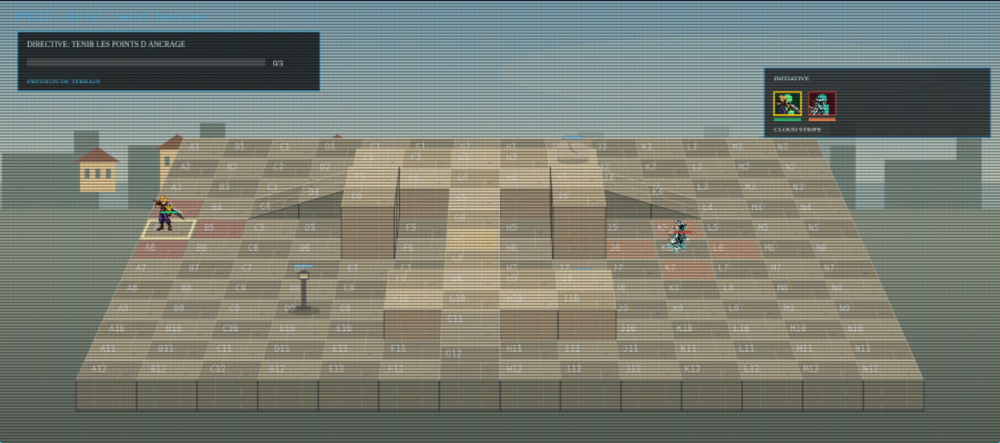
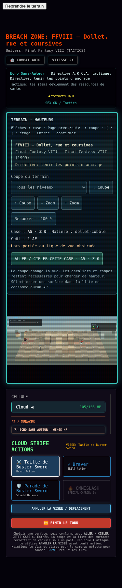
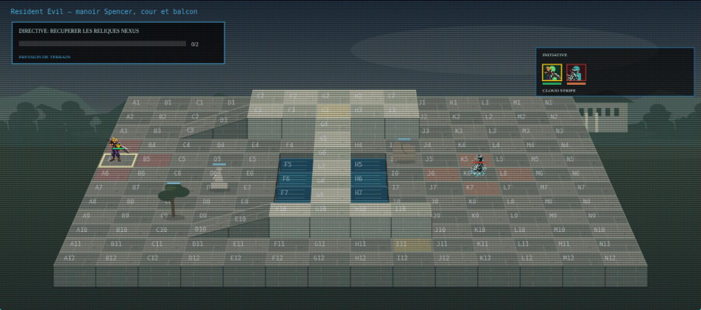
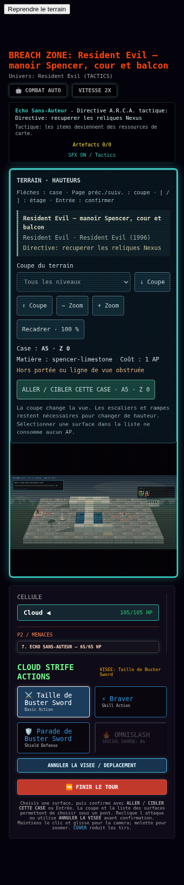
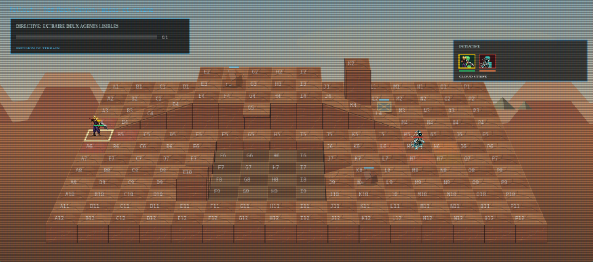
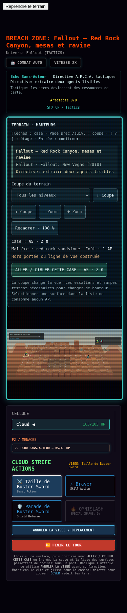
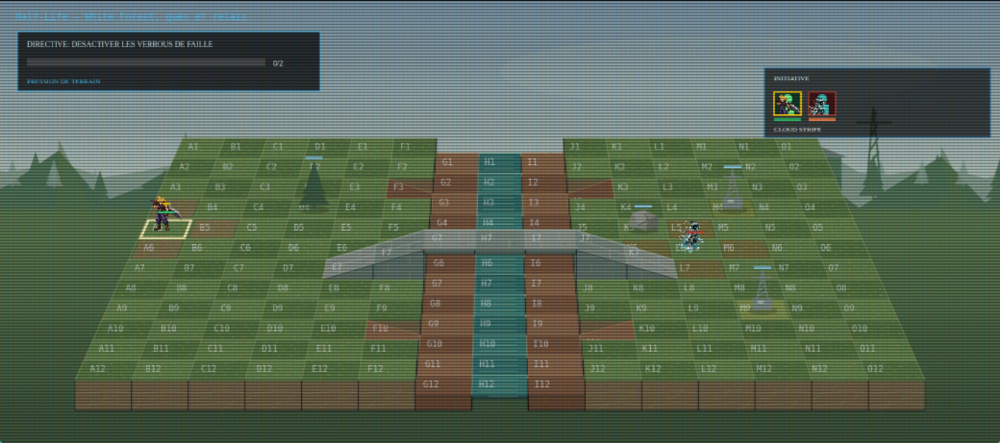
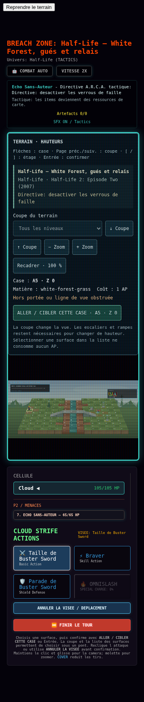

Terrains Tactics W15 — contrôle en jeu
Contrôle après gel des sources : 4 secteurs lancés depuis le mode personnalisé. Reliefs, matières et environnements dédiés sont visibles dans le vrai GameCanvas. Ces grilles sont des adaptations originales de lieux des œuvres citées ; elles ne sont pas des plans officiels reproduits à l’identique.
Dollet — coastal town streets and pale stone balconies
Final Fantasy VIII · Final Fantasy VIII (1999)
Directive: tenir les points d ancrage

Vue mobile à 375 pixels

Spencer Mansion — stone courtyard and elevated estate passage
Resident Evil · Resident Evil (1996)
Directive: recuperer les reliques Nexus

Vue mobile à 375 pixels

Red Rock Canyon — sandstone ledges and eroded wash
Fallout · Fallout: New Vegas (2010)
Directive: extraire deux agents lisibles

Vue mobile à 375 pixels

White Forest — conifer valley, stream and service crossing
Half-Life · Half-Life 2: Episode Two (2007)
Directive: desactiver les verrous de faille

Vue mobile à 375 pixels
